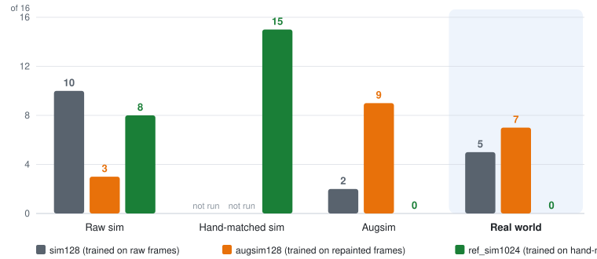

World Models for Sim2Real Style Transfer
Can ten minutes of real video make a simulator look real enough to evaluate and train robot policies? A controlled study on one hard task.
Summary
Ten minutes of real footage turn a physics simulator into one whose verdicts match the real-world results: it ranks policies in the real order, catches the policy that will fail, and trains policies that transfer better.
We fine-tuned a video world model (Cosmos3-Nano) on about ten minutes of real footage and use it as the renderer: the simulator keeps advancing the physics, the model repaints every frame to look like our cameras. We call the result augmented simulation, or augsim. The task is tight-tolerance gear insertion with a Franka FR3, three cameras and ACT policies trained on scripted demonstrations. Every policy runs on the same 16 scenes in raw sim, in augsim and on the real robot.
1. Why improve simulated visual observations
A simulator can be right about the physics and still mislead you, because the policy never sees physics. It sees pixels.
Our first policy seated the gear in every simulated scene and in half of the real ones. Worse, when three policies had to be compared, the simulator ordered them backwards and would have shipped the one that never grasped a gear in the real world.
Hand-built realism did not help. We matched the simulator's table, light and camera response to the real frames, randomized around them, and got our worst real policy: the real table has wood grain, and nothing we randomized produced texture. A video model paints texture, keeps it steady across frames and, conditioned on edges and depth, leaves the geometry alone. The question was whether a few minutes of one scene are enough.
2. Building augmented simulation
The simulator keeps the state; the world model only replaces what the cameras would see.

| Piece | Choice |
|---|---|
| Simulator | MuJoCo with a port of the real robot's Polymetis controller, signed-distance-field contacts for the gear and shaft, cameras from the current real calibration |
| Policy | ACT: three 224-pixel views plus proprioception, chunks of 100 joint targets at 30 Hz, behavior cloning on scripted full-insertion demonstrations |
| Real footage | 20 scripted episodes on the real robot, about ten minutes across three cameras, separate from the policy data |
| Renderer | Cosmos3-Nano (8 B parameters) post-trained at 256 pixels, conditioned on simulator-rendered edges and inverse depth with a fixed caption |
| Generation | Training streams repainted autoregressively at 0.06 s per frame; in the closed loop each decision frame is repainted on its own in about 2 s while the simulator waits |
| Protocol | 16 seeds fix the gear placement; the same seeds run in raw sim, in augsim and on the robot; success is the gear fully seated |
What we tried and dropped
- Controls estimated from real video instead of rendered: lower fidelity and invented grippers.
- A segmentation channel: merged gripper and gear.
- Training windows from episode centers with a bad wrist mask: the gear vanished from repainted frames. Sampling windows across whole episodes fixed it.
3. Why video models and scene adaptation
The base model paints a plausible lab. Adaptation makes it paint this lab: its table, its light, its gripper.

Other style transfer backends we tried
| Method | What it gave us |
|---|---|
| Raw sim, matched by hand (ref_sim) | Color and lighting close to the real cameras after nine calibration rounds; no texture |
| Image-to-image (img2img-turbo) | Fast, but every frame re-samples the texture; the stream flickers |
| Cosmos-Transfer2.5, no scene adaptation | Our first closed-loop renderer; geometry mostly preserved, the lab it paints is generic |
| Cosmos3-Nano, base model | Follows prompts (a red gear, sunset light) but the scene is not ours |
| Cosmos3-Nano, post-trained on ten minutes | Halves the per-frame distance to the real cameras; loses prompt following |
4. Predicting real-world performance
Augsim predicts which policy will do better on the robot, not how often it will succeed.
Five policies of different quality, the same 16 scenes, three settings. They differ in training images and data size, which is what makes them a test of ranking.
| Policy | Training images | Demonstrations |
|---|---|---|
| sim1024 | raw sim | 1024 |
| sim128 | raw sim | 128 |
| augsim128 | Nano-repainted sim | 128 |
| ref_sim1024 | hand-matched sim with randomization | 1024 |
| mix512 | raw sim | 512, half of them recovery demonstrations |

- Ranking. The real-world evaluation ordered the three newer policies augsim128, sim128, ref_sim1024. Augsim gave the same order. Raw sim gave the reverse and put the policy that never grasped a real gear first.
- Per scene. Augsim agreed with the real outcome on more scenes than raw sim for every policy but augsim128, whose training images are themselves Nano frames.
- Rates. Both simulators miss them, in both directions.
- Failure types. Real rollouts fail before contact: the fingers close beside the gear. Raw sim fails late, at the shaft. Augsim fails in between. Neither reproduces the real grasp misses, which come from calibration drift and arm settling (section 6).
Camera calibration behind each simulated result
Every simulated number is the one measured before its real test, with the cameras that policy was trained and evaluated with. For sim1024 that is its own calibration (round 27b); its augsim run is the exception, made after the real test with the recalibrated cameras (round 29). The three newer policies were trained and evaluated under round 29 throughout. mix512 is an earlier policy (October 13): its sim and augsim runs warp the cameras to that day's real poses, and its augsim used Cosmos-Transfer2.5, the renderer before Nano.
5. Training policies that transfer
Same 128 demonstrations, same states and actions, only the training images differ: the policy trained on repainted frames did best on the robot.
- sim128, the control, trained on the raw renders.
- augsim128, the treatment, trained on the same frames repainted autoregressively by Nano.
- ref_sim1024, the hand-matched alternative, trained on 1024 demonstrations rendered in the matched, randomized sim with image augmentation.
All three use the same recipe and the same real test: 16 scenes, same cameras, same placements, within two days of each other.


6. How visual transfer changes policy decisions
Hold the policy and the state fixed and change only the image: from the repainted frame the policy plans almost what it plans from the real frame.
Real rollouts store the images the policy consumed and the joint state at every decision. Before the first grasp the scene is still the seed's layout, so we put the simulated arm at the measured state, render, repaint, and compare the three plans the policy makes from raw sim, augsim and the real image: 128 matched states over four policies.

Where in the image, and what? Not where we expected. The policy looks at the same places in all three frames. What differs is what it reads there, and the table, background and gripper carry the difference, not the gears.


The part no renderer can fix. Replaying the real robot's eight successful action sequences open-loop in the simulator grasped eight times and seated twice. The simulated tool center drifts millimeters from the real one, and a sub-millimeter insertion does not forgive that.
7. Findings and next steps
Appearance was the part of the gap that ten minutes of video could close. What remains is geometry and dynamics.
Findings, for this task and setup.
- Augsim ranks policies in the real-world order and catches the one that will fail on the robot. It does not estimate success rates.
- Training on repainted demonstrations transferred better than training on raw or hand-matched ones: a direction measured on 16 scenes, not an effect size.
- The mechanism is texture, not attention.
- The remaining real failures are not visual. A camera drift of a fraction of a degree moves the grasp by a centimeter, and the arm settles millimeters from its command.
Limitations.
- 16 scenes per setting, one task, one setup, one recording session for the model's real data.
- Per-frame repainting in the closed loop flickers, and 2 s per frame rules out online use.
- The adapted model paints the same image for every prompt. The base model's prompt following, the lever RoboRender uses to randomize textures and distractors, is lost.
- Each camera is repainted on its own; multiview consistency is not enforced.
- The renderer is faithful under camera offsets of up to about 20 degrees and 20 centimeters as long as the view stays on the table. Show it the robot pedestal or the empty floor and it paints a plausible lab that is not there.
Next.
- A state-based teacher that solves the whole task in simulation, distilled into a visuomotor student on repainted frames.
- Pick the renderer by what it does to learning, not by how it looks: train clones of one policy briefly on the same states repainted by each candidate and keep the one whose action error on real images falls fastest.
- Repeat the training comparison at 512 to 1024 demonstrations with checkpoint selection in augsim.
- Model the arm's settling offset in the simulator.
Appendix
A. Outcome of every scene
Each cell is the furthest stage reached: no grasp, grasped, lifted, engaged (on the shaft), or seated.

sim1024, 16 scenes: raw sim, augsim, real
| Seed | Raw sim, its cameras (round 27b) | Raw sim, recalibrated after the test (round 29) | Augsim (round 29) | Real |
|---|---|---|---|---|
| 1000000 | seated | seated | engaged | no grasp |
| 1000001 | seated | seated | seated | seated |
| 1000002 | seated | seated | lifted | no grasp |
| 1000003 | seated | seated | lifted | lifted |
| 1000004 | seated | seated | lifted | no grasp |
| 1000005 | seated | engaged | engaged | lifted |
| 1000006 | seated | seated | seated | seated |
| 1000007 | seated | engaged | lifted | seated |
| 1000008 | seated | engaged | engaged | seated |
| 1000009 | seated | engaged | engaged | seated |
| 1000010 | seated | seated | engaged | no grasp |
| 1000011 | seated | seated | engaged | seated |
| 1000012 | seated | engaged | engaged | seated |
| 1000013 | seated | seated | engaged | seated |
| 1000014 | seated | seated | seated | no grasp |
| 1000015 | seated | seated | lifted | no grasp |
| Seated | 16/16 | 11/16 | 3/16 | 8/16 |
sim128 and augsim128, 16 scenes
| Seed | sim128: raw sim | sim128: augsim | sim128: real | augsim128: raw sim | augsim128: augsim | augsim128: real |
|---|---|---|---|---|---|---|
| 1000000 | seated | engaged | lifted | seated | engaged | seated |
| 1000001 | engaged | engaged | lifted | engaged | lifted | lifted |
| 1000002 | lifted | lifted | no grasp | lifted | engaged | lifted |
| 1000003 | seated | seated | seated | engaged | seated | seated |
| 1000004 | seated | engaged | no grasp | engaged | lifted | no grasp |
| 1000005 | engaged | lifted | no grasp | lifted | seated | lifted |
| 1000006 | seated | no grasp | seated | engaged | seated | seated |
| 1000007 | grasped | no grasp | seated | lifted | engaged | seated |
| 1000008 | seated | lifted | no grasp | lifted | seated | no grasp |
| 1000009 | seated | engaged | seated | engaged | seated | no grasp |
| 1000010 | seated | no grasp | no grasp | seated | seated | lifted |
| 1000011 | seated | engaged | pre-insert | engaged | seated | seated |
| 1000012 | lifted | lifted | pre-insert | engaged | engaged | lifted |
| 1000013 | seated | seated | seated | seated | seated | seated |
| 1000014 | engaged | engaged | no grasp | engaged | engaged | seated |
| 1000015 | seated | engaged | lifted | lifted | seated | no grasp |
| Seated | 10/16 | 2/16 | 5/16 | 3/16 | 9/16 | 7/16 |
mix512, 16 scenes: raw sim, augsim, real
| Seed | Raw sim (cameras warped to the real poses) | Augsim (Transfer2.5) | Real |
|---|---|---|---|
| 1000000 | engaged | engaged | seated |
| 1000001 | engaged | engaged | lifted |
| 1000002 | engaged | seated | no grasp |
| 1000003 | engaged | engaged | grasped |
| 1000004 | engaged | seated | lifted |
| 1000005 | engaged | engaged | lifted |
| 1000006 | engaged | seated | seated |
| 1000007 | seated | engaged | lifted |
| 1000008 | seated | engaged | lifted |
| 1000009 | seated | seated | seated |
| 1000010 | lifted | engaged | grasped |
| 1000011 | engaged | seated | seated |
| 1000012 | seated | engaged | pre-insert |
| 1000013 | engaged | engaged | pre-insert |
| 1000014 | engaged | engaged | no grasp |
| 1000015 | engaged | lifted | lifted |
| Seated | 4/16 | 5/16 | 4/16 |
Agreement with the real outcome, scene by scene
| Policy | Raw sim | Augsim |
|---|---|---|
| sim1024 | 8/16 (predicts every seed seated, κ 0) | 9/16 (κ 0.13) |
| sim128 | 9/16 (κ 0.20) | 13/16 (κ 0.48) |
| augsim128 | 10/16 (κ 0.19) | 8/16 (κ 0.02) |
| ref_sim1024 | 8/16 | 16/16 |
| mix512 | κ 0.00 | κ 0.54 |
| Pooled, three newer policies | 27/48 (κ 0.07) | 37/48 (κ 0.37) |
B. Failure stages and sim-to-real fixes
Real rollouts lose scenes to empty grasps; the simulators lose them later, at the shaft.

Sim-to-real fixes, stage by stage
| Stage | Problem found | Fix | What remains |
|---|---|---|---|
| Camera calibration | The cameras moved often; stale poses caused grasp misses | 29 calibration rounds; calibration versioned with each policy | A 0.28-degree drift still moves the grasp 5 to 14 mm |
| Controller | A policy that was perfect in sim failed on the robot: different control law | Port of the real Polymetis controller into the simulator | The real arm settles about 3 mm from its command; 6.75 mm RMS tracking error |
| Collision geometry | Whole-mesh distance fields: false penetration, drifting gear | Split fields, segmented shafts, no contact hacks | Drift in micrometers, penetration under 0.02 mm |
| Hand payload | Mount reconstructed from video | Mesh reconstruction | Modelled 81 g against 177 g real |
| Gripper | Grasp gate against a 29 mm stall; integrator windup | Settle gate; event-style gripper action | Hysteresis and 5 N force matched |
| Initial state | Real scenes were not the simulated scenes until October | Seeds from the sim's nominal poses; overlay placement | Placement error not measured |
| Timing | 60 Hz evaluation against 30 Hz demonstrations; slow simulated gripper | Cadence fix; retimed hand; recollected demonstrations | Real cameras lag about 5 frames |
| Rendering | Raw sim looks nothing like the cameras | Nano repainting | About 20 times the real-vs-real distance |
Policy-learning approaches tried before plain behavior cloning
Plain behavior cloning on clean full-insertion demonstrations beat every addition we tried.
| Approach | Best result | Why it stopped |
|---|---|---|
| Staged state-based PPO | 94.5 percent on the chained task | Never distilled to vision under realistic gripper physics |
| SERL / RLPD visuomotor RL | 0 percent in three runs | No signal from the sparse reward |
| Residual PPO on ACT | 53 to 66 percent, did not replicate | Exploration noise larger than the 0.5 mm clearance |
| Reverse-curriculum PPO teacher | 78 percent | Local optimum; grasp-gate defects |
| Teacher to student distillation | 37.5 percent | Plateau, then a dataset bug |
| DAgger with the scripted expert | 18 of 32 to 29 of 32 in round one | Later rounds collapsed: a physics hook broke the expert |
| Residual PPO on the ported simulator | 69 to 77 percent, flat | 1.4 s per environment step |
| Behavior cloning, 1024 demonstrations | 29 of 32 in sim, 8 of 16 real | Remaining failures are pre-contact on the robot |
C. Style transfer backends: latency
Latency of each backend
| Use | Latency |
|---|---|
| Autoregressive stream, 121-frame chunks | 0.057 to 0.064 s per frame; 128 demonstrations times three cameras in 2.7 h on one GPU |
| Closed-loop decision frame, per-frame | about 2.0 s |
| Closed-loop decision frame, autoregressive 101-frame window | 6.2 s per window |
| Cosmos-Transfer2.5, 35 steps, 720 pixels | 3.6 s per frame (7.2 s in the closed loop) |
| img2img-turbo, 1 step, 512 pixels | 0.148 s per frame |
Most of the speed came from cutting the sampling steps from 35 to 10, then from caching the transformer's attention (cache_dit, 14 percent faster at 34 dB PSNR against the uncached output).
D. Limit tests of the adapted model
Two tests on one scene, the right static camera and the wrist camera:


E. Image and video realism metrics
Metric values per camera
KID (Inception features) and FD-DINOv2 per frame, FVD on 16-frame clips. The floor is one half of the real scenes against the other.
| Source (wrist / right / left camera) | KID × 1000 | FD-DINOv2 | FVD |
|---|---|---|---|
| Real, other half (floor) | 4.6 / 2.8 / 4.5 | 66 / 75 / 93 | 154 / 47 / 131 |
| Raw sim | 233 / 168 / 155 | 1531 / 2044 / 2090 | 1803 / 700 / 1038 |
| Hand-matched sim | 175 / 185 / 171 | 1472 / 1574 / 1505 | 1215 / 491 / 683 |
| Nano, per-frame decision frames | 78 / 87 / 73 | 539 / 968 / 894 | — |
| Nano, autoregressive stream | 80 / 90 / 100 | 551 / 964 / 977 | 713 / 255 / 441 |
F. Comparison with RoboRender
RoboRender (Huang, Ai, Li Fei-Fei, Jiajun Wu and others, October 2026) asks whether a video model can make simulated data good enough to train real policies at scale, and answers yes for visually driven tasks. This project asks how little real data is enough, whether a repainted sim can evaluate a policy, and what remains when the task is contact-rich.
| RoboRender | This project | |
|---|---|---|
| Base model | Wan2.1-T2V-1.3B | Cosmos3-Nano 8B |
| Real training data | about 127k samples from AgiBot-World and DROID | 20 episodes, one setup |
| Conditioning | Sim depth, robot RGB and mask, a scene prompt, the preceding frame | Edges and depth, fixed caption, autoregressive |
| Multiview | Views stacked into one latent | Each camera on its own |
| Prompt following | Kept | Lost after fine-tuning |
| Use of the renderer | Train a policy on rendered sim, test on the robot | Evaluate policies in the repainted sim; train on it at 128 demonstrations |
| Tasks | Pick-and-place, drawer, fridge, mobile pick | Tight-tolerance gear insertion |
G. Scripts and logs
Where each result comes from
| What | Where |
|---|---|
| Raw-sim and augsim evaluations | jobs/sim_eval_mrc.sbatch, jobs/augsim_nano_eval.sbatch (AR=1 for the autoregressive loop) |
| Real evaluations | wmrl/eval-logs/real_eval_20261019.md (sim1024), real_eval_20261013.md (mix512), real_eval_20261028_nano128_24k.md (augsim128), real_eval_20261030_raw128_20k.md (sim128), real_eval_20261030_refsim_52k.md (ref_sim1024) |
| Realism metrics | jobs/realism_metrics.py |
| Replay, first-decision and layer probes | jobs/divergence_probe.py, jobs/consumed_regen.sbatch, jobs/act_layerwise.py |
| Flicker and the autoregressive loop | jobs/ar_vs_perframe.py; augsim/infer/nano_mrc_server.py (NANO_AR=1), augsim/t25/closed_loop.py |
| Styled training | jobs/act_style128_lanes.sh, jobs/demo_nano_src.py, jobs/style128.sbatch, jobs/assemble_parts.py |
| Hand-matched sim | wmrl/wmrl/sim/mrc_gear/ref_sim.py, jobs/act_refsim_lanes.sh |
| Limit tests | jobs/nano_limits.py; camera-pose and exit-reentry study jobs/nano_campose.py, results in wmrl/docs/nano_campose/ |
| Matched-state analysis | jobs/e12_where_what.py, jobs/e12_where_what.sbatch; results in wmrl/docs/wrapup/e12/ |
| Figures and videos | jobs/gap_attribution.awk, jobs/combine_videos.py, jobs/real_vs_sim_figs.sh; per-seed TSVs in wmrl/docs/wrapup/ |